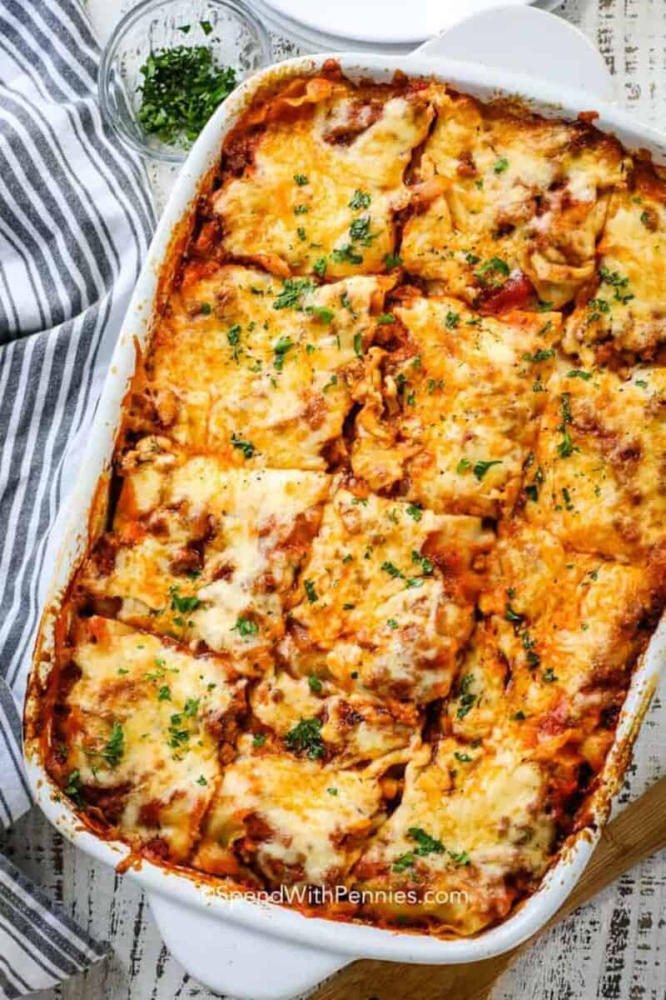

Homemade Lasagna
A classic and tasty lasagna with creamy cheese sauce. It's simple but takes a bit of time to make, but it's delicious!
The delicious minced meat sauce is alternated with lasagna plates and cheese sauce in an oven dish.
Then top with grated cheese and bake in the oven.

Ingredients:
Meat sauce:
- 2 Onions
- 1 msk Butter
- 500g Minced meat
- 400g Crushed tomates
- 2 msk Tomato paste
- 1pc Meat bouillon cube
- 1 tsk Basil
- 1 tsk Salt
- 1 krm Black pepper
- 1 tsd Chili pepper
Cheese sauce:
- 4 msk flour
- 7 dl Milk
- 2 dl Grated cheese
- 1 tsk Salt
On top:
Steps to cook:
- Prepare a form that reasonably fits the lasagna plates, so that they can be laid out and cover the surface quite well.
The shape I use is 20x30 cm, but something smaller, about 20x25 cm, I think would fit even better.
- Start with the meat sauce. Peel and chop the onion. Heat a frying pan with butter or oil.
Fry onion and minced meat so that the onion becomes shiny and nice and the minced meat gets a little color.
- Add tomatoes, tomato puree, basil and stock cube. If you want a bit of chili flavor on your lasagna, chili pepper is recommended.
- Let it cook on a low heat, preferably under the lid, for about 20 minutes. Feel free to make the cheese sauce in the meantime. Season the meat sauce with salt and pepper.
- Start with the cheese sauce: Measure the flour in a saucepan that it does not burn so easily and add a small portion of the milk, about 1.25 dl can be enough to start with to 4 tablespoons of flour.
Whisk the flour into the smaller part of the milk first and then whisk in the rest of the milk to a smooth mixture.
- Bring to a boil while stirring. Lower the heat when it boils and let simmer for about 3 minutes. Add salt. Stir and taste and add if necessary. more salt.
- Add the grated cheese. Stir until the cheese melts. Remember not to let the sauce boil with the cheese in, then the sauce can become gritty.
- When the meat sauce and cheese sauce are ready, it's time to assemble the lasagna.
(NOTE! Read on the package how long the lasagna plates should be cooked. If it is more than 20 minutes, you should pre-boil them before using them in the lasagna,
alternatively leave the lasagna in the oven longer than the time indicated below, otherwise it will be a hard lasagna.)
- Pour half of the cheese sauce on the bottom of the mold. Place 3 of the tiles.
- Spread half of the meat sauce. Place three plates. Spread the rest of the meat sauce on top.
- Add the last three tiles. Pour on the rest of the cheese sauce. Sprinkle with grated cheese.
- Set in the middle of the oven at 225°C for about 15-20 minutes or as long as it takes for the lasagna sheets to become soft (read on the package). You may need to put on foil to prevent it from burning on top if you keep it in for longer than 20 minutes.
Serve!